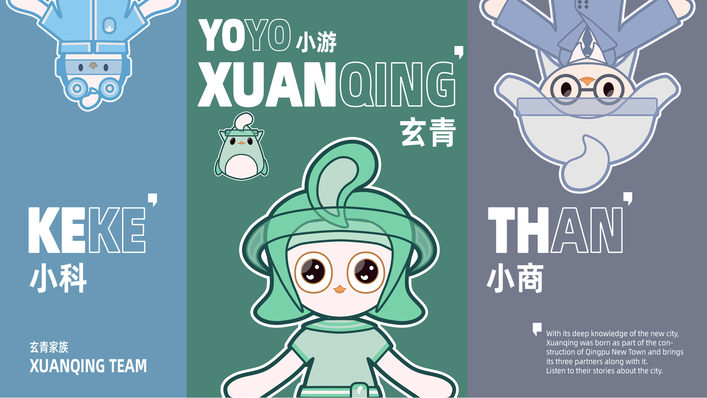

青浦的问题从来不是缺资源，而是找不到。这里既有古镇水乡，也有国家会展中心和人工智能产业园，而调研的结论是： 「想找的信息很难找到，我们需要的信息也拿不到。」 XUAN'QING TEAM 的解法是：把城市的三条产业线变成四个角色，再把这些角色变成通往城市本身的入口。
00结论摘要
这个项目是什么，以及它为什么成立新城建设是当下中国城市化的重要方向。但多数「新城」的对外形象单薄且趋同，很难在公众心中留下印象。XUAN'QING TEAM 是为青浦量身打造的一整套城市 IP 系统设计与规划 —— 基于青浦自身的发展特点与优势，用设计思维去运营和表达，在城市推广过程中留下记忆点，让城市信息被更有效地获取，从而改善城市对外形象、助力城市进一步发展。
- 把命题从「宣传城市」换成「让城市可被找到」。调研板上落下一个很直接的判断 —— 信息是存在的，但没有人够得着。正是这次重新定义，让一份宣传委托变成了一套设计系统。
- IP 取自「城市感受」，而不是地标。角色系统没有去画天际线，而是从四种感受里提取 —— 灵活、开放包容、自由闲适、年轻。地标会过时，感受可以传播。
- 策略有对标，不是凭感觉。对「熊本熊」的研究确立了城市品牌的作用机制 —— 一个与城市强绑定的角色、给它独立的城市位置、再用持续的活动把它围起来。青浦的 IP 是刻意沿着这条因果链走的。
- 角色对应城市真实的产业。科技、商务、生活三条主线各有一个角色，因此这套 IP 不只是吉祥物组合，本身就是一套导航结构。
- 系统是为了「落地」而建，不只是为了汇报。一套字体、一套三色编码、一组标识与印章、一整套动态姿态、一个四板块的数字平台、十一个已定位的点位 —— 工作一直做到 IP 真实出现在城市里为止。
| 项目形式 | 城市 IP 整合系统 —— 策略、识别、角色设计、数字产品、城市落地 |
| 专业范围 | 设计研究 · IP 策略 · 角色系统 · 视觉识别 · 平台设计 · 城市应用 |
| 城市 | 上海青浦新城 —— 上海五个综合性节点城市之一 |
| 年份 | 2022 |
| 交付物 | 背景调研 · IP 策略 · 四个角色与表情姿态库 · 字体与色彩系统 · 标识与印章 · 网站平台 · 实地应用 · 宣传片 |
01背景与问题
青浦站在哪里，又卡在哪里青浦新城在哪里？
它是上海未来十年综合性节点城市建设中的五个节点城市之一，位于上海西部，青浦区中心坐落着上海最大的湖泊 —— 淀山湖。
这座城市想做什么
GATE 4 —— 成为「上海之门」：承接国内外各类活动，培育创新创业环境，并建成适合旅游的生态宜居城市。
城市已经建成了什么
商务与会展
国家会展中心（上海），以及一批新建商业综合体与文化展馆。
科技与产业
科技产业园，其中包括人工智能产业园。
旅游与人文
以朱家角为代表的知名水乡古镇，文化特征鲜明，以及更大的淀山湖景观带。
然而，我们能看到什么？调研的原话是：「想找的信息很难找到，我们需要的信息也拿不到。」 青浦并不缺资源 —— 缺的是一个可被读取的界面。而且就当时而言，以上这些成果，并没有让更多人真正认识青浦。
把问题从「营销」移到「可读性」。城市宣传类的命题，通常产出一句口号和一张海报，因为它默认的问题是「知道我们的人不够多」。但先盘点这座城市已经建成的东西，再追问一个访客究竟能找到什么 —— 问题就被重新定位成了城市尺度的信息架构。正是这一次挪动，让交付物最终变成了一套以可检索平台为核心的系统，而不是一次传播活动。
02设计研究
对标、方法与实地研究只问了一个问题 —— 如何让城市信息被更有效地传达、被更多人知道？ —— 并沿三条线作答：城市品牌究竟如何起作用、这个品类当下是怎么做推广的、以及青浦在地到底是什么样子。
线索 01 —— 对标：熊本熊背后的机制
| 步骤 | 对标揭示的内容 | XUAN'QING TEAM 从中取用的部分 |
|---|---|---|
| 1 —— 寻找差异 | 找出这座城市独有的特征、文化与优势，而不是在通用的景点上竞争。 | IP 从青浦自身的性格里长出来，而不是套用模板。 |
| 2 —— 归纳特征 | 把城市浓缩成人们抓得住的联想与体验。 | 四种感受成为整套角色系统的设计来源。 |
| 3 —— 设计与推广 | 创造一个能被记住、能形成印象的资产。 | 一个与城市强绑定的角色 —— 熊本熊机制的核心。 |
| 4 —— 围绕品牌持续运营 | 围绕品牌持续做活动，让这种联想随时间累积。 | 持续的产品、公共活动与一个活着的平台，而不是一次性发布。 |
对标的是机制，不是吉祥物。熊本熊真正值得抄的不是「养一只可爱的动物」，而是那条因果链：一个与城市强绑定的角色 → 在城市中获得独立位置 → 被持续的活动包围 → 最终转化为可衡量的价值。把这条链明确写出来，才能让后面四条设计方向是「有依据的」，而不是「好玩的」。
线索 02 —— 当下城市是怎么推广自己的
目前城市推广主要有四个切入点：以知名人文历史景点为主打；通过地标建筑与建筑群传播城市；用龙头企业作为城市代表；以及通过规划城市知识产权来实现城市价值。青浦在前三条上都做了尝试 —— 朱家角、国家会展中心、人工智能产业园 —— 而研究的结论恰恰是：这正是信息始终传达不到的原因，「就当时而言，这些并没有让更多人认识青浦」。
那么，如果青浦拥有自己的 IP，是否可以反过来帮助上述内容的传播？ 第四个切入点 —— 规划城市知识产权 —— 并不是对前三条的补充，而是最终把它们装进去的容器。朱家角、会展中心、产业园都还在原地；IP 要做的是让它们变得「找得到」。
线索 03 —— 实地调研
这套策略不是坐在桌前写出来的。实地调研由住在青浦的朋友带路，穿越三个区域收集信息、建立第一手体验 —— 商务与会展、科技与创业、旅游与生活 —— 以获得对这座城市更真实的理解。由此得出的结论，把青浦的潜在受众锁定为「新青浦人」：商务人士、科技人才、游客与求职者；而他们对这座城市的共同期待，被归纳为三个词 —— 灵活、开放包容、自由闲适。

03设计策略
从研究问题到设计方向研究最终收敛成一个「How might we」：基于 IP 经济，我们如何推广青浦？ 它被四条有先后顺序的设计方向回答 —— 这四条也同时定义了后续工作的推进次序。
把优势讲清楚
先把青浦的优势与特点梳理清楚，才有可能在其上建立 IP 系列。
做出首批衍生
生产最初的 IP 衍生物，并用它们来推广这个系列。
用 IP 做城市推广
用 IP 系列开展城市推广活动，为城市打造一张「名片」。
延伸到信息层
把 IP 进一步用到城市信息与资讯的推广上。
把策略排序，让每一步都为下一步降低风险。没有方向 01，什么都画不出来；方向 02 产出了可以被讨论的东西；方向 03 把它放到人面前；方向 04 才把真实的城市信息接入品牌。按这个顺序排列策略，就把一个含糊的「做一个 IP」，变成了四道可以逐一检验、再投入下一道的关卡。
04IP 角色系统
专业方向：角色设计从「城市感受」演化设计，而不是从传统城市地标出发。整套角色系统都立在这一个决定上。四种元素从青浦的观感中被提取出来 —— 灵活、开放包容、自由闲适、年轻 —— 它们而非天际线，成为 IP 造型的来源。地标只能被重画；感受却可以被做成动态、做成商品、被居住。
| 来源元素 | 它来自哪里 | 如何转化为形态 |
|---|---|---|
| 灵活 | 燕子 —— 注意它剪刀状的尾羽。 | 尾部成为标志性剪影，呼应掠过江南水乡的雨燕。 |
| 开放包容 | 水 —— 青浦最丰沛的资源，也是它最具特征的自然景观。 | 水滴成为贯穿始终的符号，可以重塑为头部、肢体与道具。 |
| 自由闲适 | 鸟儿展开的双翼 —— 这座城市从过去中生长出来。 | 姿态与动作围绕「舒展」而非「忙碌」来构建。 |
| 年轻 | 青浦作为一座上升中的新城，年轻人口不断增长。 | 比例、色彩与表情线保持柔和明亮，刻意去「企业感」。 |
四个角色
XUANQING 玄青
#青浦的全知向导 · #带领探索青浦 · #机敏灵动
凭着对新城的深度了解，玄青诞生于青浦新城的建设之中，并带着它的三位伙伴一同出现。它最终演化成青浦信息的活索引 —— 那个负责回答问题的角色。
KEKE 小科
#技术专家 · #分享科技知识 · #热爱探索
冷静而聪明 —— 它是城市科技产业园区的向导与协作者。
THAN 小商
#商务专业人士 · #落实城市活动
稳当可靠 —— 它承载会展、会议与商业街区这条线。
YOYO 小游
#玩法制造者 · #充满好奇
名字直译就是「去游历、去玩」的伙伴角色 —— 那个让整套系统显得「有人住着」而不是「公司出品」的小小好奇存在。
命名与结构都是刻意的：XUANQING 与 YOYO 来自城市之名玄青 —— 「玄」取自玄青（深蓝绿色，亦是这座城镇的颜色），「青」取自青浦。三位团队成员对应青浦的三大产业，合在一起构成的是一个家族，而不只是一只吉祥物 —— 因此这个阵容本身，就在传达这座城市里有什么。


05视觉识别系统
专业方向：视觉设计系统这套识别的存在意义，是防止一个角色驱动的品牌在扩散到十一个不同点位后走样。下面每一条规则，都是因为这套系统必须由设计师以外的人来执行。
| 组成部分 | 规格 | 它为什么存在 |
|---|---|---|
| 字体 | 阿里巴巴普惠体 Bold / Medium / Regular 三个字重。 | 一款可免费商用的完整中文字族 —— 城市及其合作方在复制物料时不会遇到授权摩擦。 |
| 色彩编码 | 三个主色，各对应一条产业线 —— 生活（绿，玄青）、商务（灰，小商）、科技（蓝，小科）。 | 颜色就是导航系统：它告诉受众，此刻正在被讲述的是这座城市的哪一段故事。 |
| 标识与印章 | XUAN'QING TEAM 标志组合，以及每个角色各自的印章变体。 | 给到合作方一些小巧、正式、可复制的元素用于联合出品。 |
| 分区建筑元素 | 线描建筑剪影，每个板块一套。 | 把每条产业线落回一个真实场所，同时不与角色抢视觉。 |
| 动态元素 | 一整套角色姿态、表情与动作库。 | 商品、标识牌与界面都需要角色在做不同的事 —— 姿态是基础设施，不是装饰。 |

给颜色一份职责，它才能在交接后活下来。一套三色配色很容易沦为审美决定。把每个颜色指派给一条产业线，它就变得有功能：科技园的合作方不需要被额外告知「哪个角色属于你」，直接套蓝色就行。同一套逻辑也驱动了姿态库 —— 提供一整套姿态而不是一张吉祥物照，正是品牌在别人开始使用后不会塌缩成一个 logo 的原因。
06数字平台
专业方向：产品与界面设计平台是这套策略从「传播」变成「基础设施」的地方。如果问题在于信息找不到，那么答案就必须是一个「找得到」的地方。网站被组织为四个板块，每一个都针对研究中识别出的一种失效。
首页
以三条产业线 —— 商务、生活、科技 —— 经由各自的角色呈现，因此入口本身也充当整套系统的图例。
商务板块
评论、展览、玄青论坛（「看看正在发生什么」）、新闻与活动，以及地图。标签栏清晰地对接到相关官方网站 —— 城市原有的信息，终于有了一个界面。
社区板块
一个集中式的分享平台，用于青浦社区内部的信息交换 —— 把单向的宣传，变成居民也会参与生产的东西。
AI 助手
内嵌在界面中的玄青助手：更好地获取城市信息，同时成为你在青浦的虚拟伙伴。向导角色由此变成了一个真实的服务。
让 IP 成为界面，而不是装饰。多数角色品牌止步于把吉祥物放到页面一角。这里，向导角色被提升为 AI 助手 —— 那个真正解决研究核心痛点的东西。正是这一步，把「一个品牌」和「一个产品」区分开来，也正是平台成为交付物、而不是一张效果图的原因。
交互演示
07城市落地应用
专业方向：场所营造与执行IP 只有出现在街头才算真正存在。这套系统被映射到青浦的十一个地标点位，并通过三种应用类型落地，让同一套角色语言既能用在路灯道旗的尺度上，也能用在会展中心立面的尺度上。
景区与展馆导视
用角色来串联点位的导览地图、标识与道旗系统，帮助访客在景点与展馆之间建立方位感。
地方文创产品
基于姿态库开发的周边与文创产品 —— 这一层让 IP 能被访客「带回家」。
公共活动宣传
户外与商业海报，其中包括一张专为拍照设计的全城地图 —— 它是被设计来「被拍下并分享」的，而不只是被阅读。
| 已映射点位 |
|---|
| 朱家角古镇 · 东方绿舟（淀山湖）· 淀山湖景观大道 · 曲水园 · 青浦博物馆 · 青浦图书馆 · 宝龙广场 · 富泉汇星 · 百联奥特莱斯广场（青浦）· 国家会展中心（上海）西虹桥公园 · 上海虹桥中央商务区 |
先设计落地，再设计装饰。先把真实点位列出来 —— 古镇、园林、博物馆、奥特莱斯、会展中心 —— 就迫使视觉系统必须在差异极大的场景中被检验：人文、零售、文化与商务。只能在其中一种场景里成立的方案，会在这一步被删掉，而不是等到某天在雨里的路灯杆上才被发现。
08视频呈现
系统在运行中的样子09成果
交付了什么，以及它证明了什么交付清单
- 背景与设计研究基座：青浦的城市背景与资源、城市品牌方法论、熊本熊对标，以及三区域实地调研。
- 由单一「How might we」推导出的 IP 策略，展开为四条有先后顺序的设计方向。
- 对应城市三条产业线的四角色 IP 系统，并完整记录了从「感受」到「形态」的元素转化过程。
- 视觉识别：阿里巴巴普惠体、带语义分工的三色编码、标识与印章系统、分区建筑元素，以及动态姿态库。
- 四板块数字平台 —— 首页、商务、社区与 AI 助手 —— 承载城市真实信息。
- 覆盖十一个地标点位的应用规划，通过导视、文创产品与公共宣传三类方式落地。
XUAN'QING TEAM 最可迁移的经验是：一个品牌的上限，取决于它下面的结构。 角色确实好记，但让这个项目成立的是 —— 它们被分配了真实的工作：每条产业线一个、一个做向导、一个做伙伴，然后被放进一个能让它们真的去做这些事的地方。而从「城市感受」而非地标出发来推导设计，正是这一切得以实现的原因：感受可以被切分、被指派、被部署，而天际线只能被画下来。